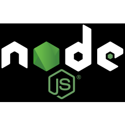

About Me
Welcome to my little corner of the internet! I'm that person who's always caught between debugging code and trying to clutch a 1v5 in Valorant (spoiler alert: the code usually wins, but I'm not giving up on those Valorant highlights just yet). Speaking of Valorant yes, I'm one of those people who probably spend way too much time perfecting their crosshair placement and debating whether the Vandal or Phantom is superior. If you ever need someone to throw some questionable lineups with, I'm your person!
When I'm not getting owned in ranked matches, I'm diving deep into the fascinating world of AI and programming. Think of me as a tech enthusiast who's equally excited about training neural networks and landing that perfect headshot. There's something incredibly satisfying about both, though AI tends to be slightly more forgiving than Valorant's hit registration (just saying). I'm on a journey to merge my love for gaming with my passion for programming and AI. Who knows? Maybe one day I'll create an AI that can finally tell me why I really didn't hit that shot when I was clearly on their head. Fun fact: I probably spend more time reading documentation than I do in Valorant death matches and that's saying something! But hey, whether it's mastering new programming concepts or finally hitting that perfect spray control, I'm all about that continuous improvement life.
Currently exploring the endless possibilities in AI, breaking (and fixing) code, and occasionally reminding myself that rushing B isn't always the answer in both programming and Valorant. Let's connect! Whether you want to discuss the latest AI developments, debate programming best practices, or just need someone to complete your Valorant stack I'm game for it all! Just don't ask me to play Cypher. Please. I promise I'm better at Python than playing sentinels.
Education
Yenepoya Institue of Arts Science & Commerce, Mangalore
BSc, Computer Science and Engineering (Cyber Security and Digital Forensics)
2023 - 2026
Mar Gregorious Memorial School, Trivandrum, Kerala
Higher Secondary, Biology Science
2020 - 2022
Experience
Position - intern
Cyber Police Station, Trivandrum
Dec 2023 - Jan 2024
- Gained practical exposure to cybercrime investigation procedures
- Assisted in digital forensics analysis under professional supervision
- Learned about real-world cybersecurity incident handling
Projects

SIEM Security Platform
Developed and implemented a security monitoring solution using Wazuh and ELK Stack
Containerized the application using Docker for easy deployment
Created an intuitive dashboard for real-time threat monitoring and log analysis

Website Security Extension (Chrome)
Integrated Google Safe Browsing API to develop a real-time website safety analyzer
Enhanced web browsing security through proactive threat detection
Practiced secure coding principles and API integration.
Project Name 3
Built a credential leak detection system using Python and Hugging Face Transformers
Implemented pattern recognition for sensitive data identification (API keys, credit cards, SSNs)
Demonstrated practical application of AI in cybersecurity
Skills
 JavaScript
JavaScript.jpg) HTML
HTML CSS
CSS React
React-  Node.js
 MongoDB
MongoDB
Certifications & Papers
Certified Penetration Tester (CPT) - RedTeam
Advanced web application and network penetration testing, vulnerability management, wireless security, Docker security, thick-client pen testing, and cloud security.
Cyber Security Analyst - IBM (Coursera)
Hands-on expertise in tools like SIEM, endpoint protection, incident response, and penetration testing.
Contact
Feel free to reach out to me via email or connect with me on social media. I'm always open to discussing new opportunities and projects.
Email: adarshanil.963@gmail.com
Mini-Games
Take a break and try out these mini-games!
Click the Dot
Click the red dot as fast as you can!
Your Time: 0 ms
Color Matcher
Match the colors within the time limit!
Time Left: 10
Score: 0